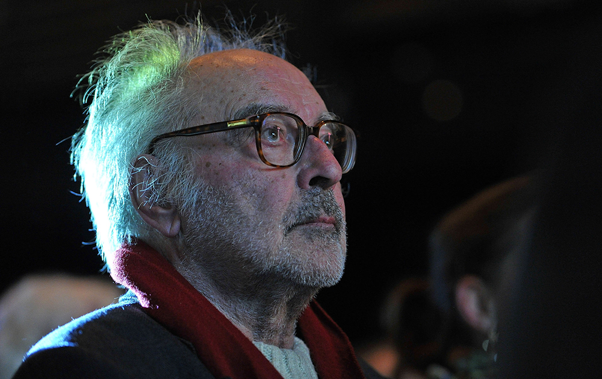
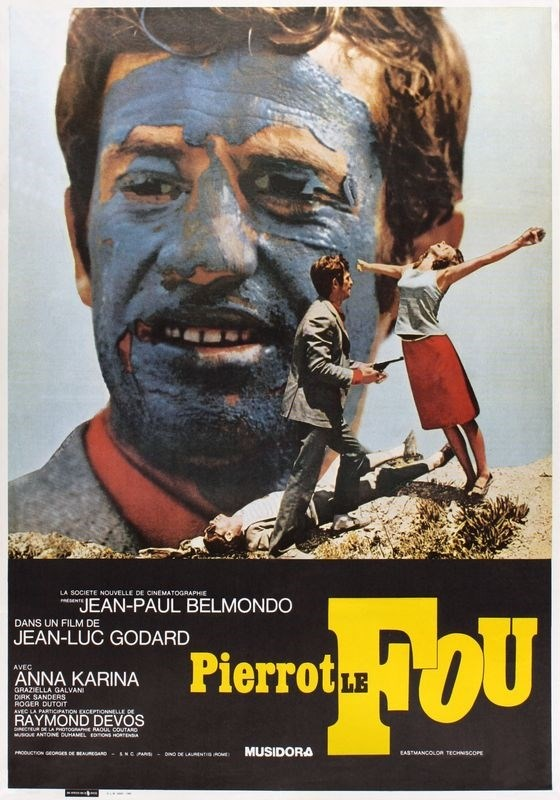
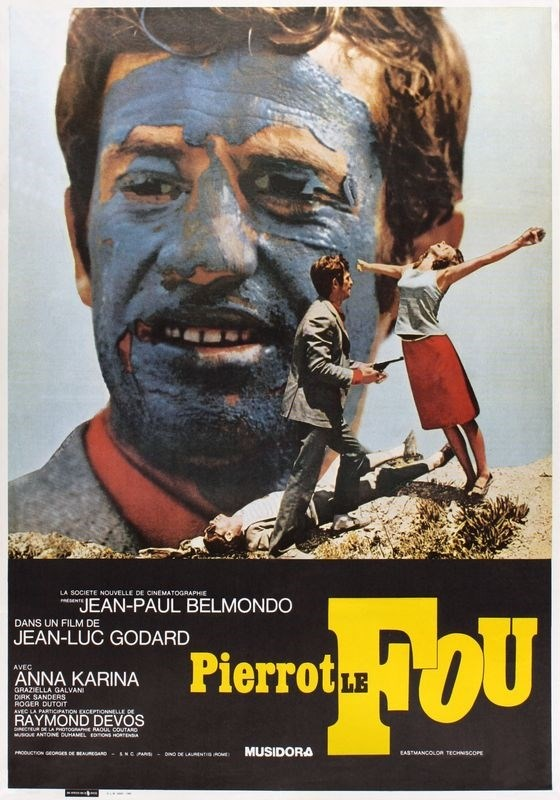
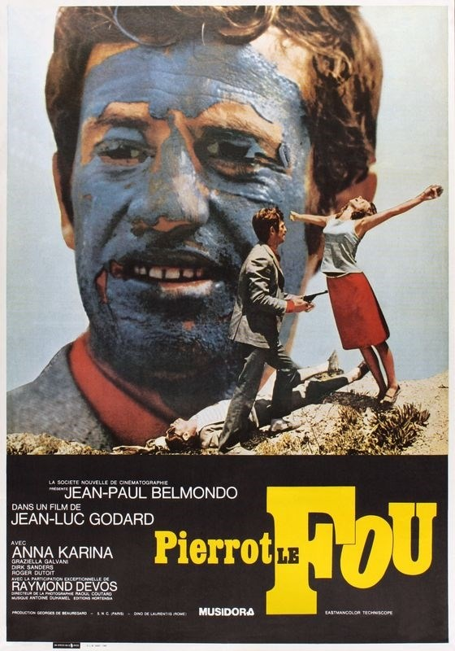

Французская новая волна — направление в кинематографе Франции конца 1950-х и 1960-х годов. Одним из его главных отличий от преобладавших тогда коммерческих фильмов был отказ от устоявшегося и уже исчерпавшего себя стиля съёмки и от предсказуемости повествования. Представителями новой волны стали, прежде всего, молодые режиссёры, ранее имевшие опыт работы кинокритиками или журналистами. Они были против далёких от реальности коммерческих фильмов и нередко прибегали в кинематографе к экспериментам и радикальным для того времени приёмам.
Одновременно и параллельно с редколлегией журнала Базена во французское кино ворвался целый табун молодых разноплановых режиссёров, от Марселя Ануна до Жака Деми, от Пьера Каста до Жака Розье. Всех их объединяло одно: неприятие старых и изживших (на самом деле, изживших) себя форм старого кино. Фильмы Новой Волны – это обычно низкие бюджеты, часто импровизированные сценарии, молодые или непрофессиональные актёры, съёмки на натуре, а не в павильонах, откровенный интеллектуализм подачи материала без скидки на уровень образованности аудитории. Естественно, что в таком виде течение просуществовало 5-6 лет, потом ключевые фигуры Новой Волны разошлись в разных направлениях, снимая авторское и мало чем объединённое кино, однако пассионарного запала хватило на двадцать лет вперёд – в шестидесятые-семидесятые именно Франция была центром авторского кино.
Немного истории
Интересно, понимали ли люди, получая аккредитацию на Каннский фестиваль 1959 года, что у них на глазах произойдет зарождение одного из величайших кинотечений в истории? Конечно же нет. Они скорее удивлялись, почему это фестиваль открывает «400 ударов» — фильм 27-летнего критика журнала Cahiers du cinéma Франсуа Трюффо, известного противника французского кинематографа, теоретика «авторского кино» и фаната Хичкока, записавшего с последним недельное интервью. Спустя несколько лет станет понятно, что именно этот фильм дал старт французской «новой волны».
Условно дебютной лентой течения был «Красавчик Серж» Клода Шаброля, вышедший в 1958 году или даже «Пуэнт-Курт» Аньес Варда, премьера которого состоялась в 1954-м. Но именно картина Трюффо стала первой успешной (и критически, и финансово) работой, благодаря которой мировое культурное общество обратило внимание на кинореволюцию во Франции.
Удешевление производства и первые ручные камеры серьезно развязали руки энтузиастам — фильмы мог снимать кто угодно. Так что журналисты Cahiers du cinéma получили возможность самостоятельно утереть нос национальному кинематографу, забронзовевшему в студийных декорациях, бюрократии и банальных сюжетах. Примером стали итальянские неореалисты, которые первыми забили на профессиональную игру и декорации — французы полностью убрали рамки, создавая картины на любой вкус.
Именно это и является отличительной чертой «новой волны» — под ее крышей собрались абсолютно противоположные ленты, объединенные лишь философией свободы и вседозволенности. Обычно к этому течению причисляют более 160 режиссеров, большинство из которых были новичками в этом деле. Среди постановщиков, числящихся частью «новой волны», есть компания, стоящая особняком. Речь о «Группе Левого берега», куда входили Ален Рене, Аньес Варда и Жак Деми. Эти режиссеры начинали карьеру еще в начале 50-х и скорее вдохновляли банду кинокритиков из Cahiers du cinéma, а не наоборот.
Кто еще вдохновлял молодых постановщиков — так это американские коллеги с ярко выраженным стилем. Еще на страницах журнала французская молодежь воспевала работы Ховарда Хоукса, Джона Форда и, конечно же, Альфреда Хичкока. Не удивительно, что влияние американской культуры так сильно чувствовалось в работах того же Годара. Так, в его дебютной картине «На последнем дыхании» персонаж Жана-Поля Бельмондо (актерский дебют) восхищается героями Хамфри Богарта и ведет себя соответствующе.
Кстати, поговорим о Годаре...
Чтобы делать кино, достаточно снимать свободных людей
(c) Жан-Люк Годар
Жан-Люк Года́р — франко-швейцарский кинорежиссёр, кинокритик, актёр, сценарист, монтажёр и кинопродюсер, стоявший у истоков французской новой волны в кинематографе. Его фильмы 1960-х годов оказали революционное влияние на мировое киноискусство.

В начале своей карьеры кинокритика Годар критиковал «традицию качества» основного французского кинематографа. Позже он и его единомышленники, объединённые под названием «Французская новая волна», стали снимать собственные фильмы. Многие из фильмов Годара бросают вызов традиционному Голливуду и французскому кино.В 1964 году Годар описал влияние себя и коллег: «Мы ворвались в кино, как пещерные люди в Версаль Людовика XV». Его часто считают самым радикальным французским режиссёром 1960-х и 1970-х годов; его подход к фильмам, политике и философии сделал его, пожалуй, самым влиятельным режиссёром французской новой волны. Наряду с демонстрацией знания истории кино через аллюзии и отсылки, некоторые из его фильмов выражали его политические взгляды; он был заядлым читателем экзистенциалистской и марксистской философии. После Новой волны его политика была гораздо менее радикальной, и его последние фильмы о репрезентации и человеческих конфликтах с гуманистической и марксистской точки зрения.

Но если начало «новой волны» еще можно отследить, то конец «беспринципного» движения так и остается загадкой. Многие считают ее финалом 1963 год, когда главный адепт течения, Годар, согласился поработать с крупной студией над фильмом «Презрение» (ирония!) и «предал» свои идеалы. В том же году Cahiers du cinéma опубликовал огромный список режиссеров, зачисленных в «новую волну», чем фактически закрыл прием заявок для новичков.
Но по факту течение, которое своим главной ценностью считало свободу кинематографа, вряд ли когда-то исчезнет. Именно благодаря ему возник «Новый Голливуд», существенно изменивший расклад в США, и артхаус в нынешнем его значении. Вряд ли вы найдете хоть одного режиссера, который не назовет режиссеров «новой волны» среди своих кумиров. Так что формально великая «Французская новая волна» окончательно схлынет после смерти последнего ее представителя — Жана-Люка Годара. Но по факту, любой, кто берет в руки камеру, чтобы снять кино, даже для себя, является адептом этого течения.
Характеристика
1. Разрушенные рамки
Как мы уже говорили, течение не признавало никаких рамок. Режиссерам позволялось все, что угодно — экспериментировать с операторской работой, монтажом, актерами, историей, звуком или даже хронометражем. Единственное, что не поощрялось — это работа с крупными студиями, которые даже в эпоху бума на новичков и креатив отказывались отдавать контроль над работой. Правда это не помешало всем пионерам «волны» в свое время поработать с большими бюджетами, после чего опять вернуться к бунту. Что тут сказать, никаких правил.
2. Ручная камера
Несмотря на неограниченные возможности, кое-какие общие черты у многих работ были. Речь о «выезде на улицы». Ручная камера позволяла не слишком запариваться окружением, заставляя экспериментировать с операторскими решениями и монтажом, а живое окружение контрастировалось с пыльными задниками студийных лент. Возможность синхронно писать звук добавила вариативности сценам — теперь их можно было снимать где угодно, даже в салоне обычного автомобиля.
3. Импровизация
Непрофессионализм актеров и желание получить живую картинку поощряли импровизацию в кадре, которая стала одним из центральных элементов «новой волны» и не совпадала ценностно с главным вдохновителем течения — Альфредом Хичкоком.
Значение
Оценивая общий вклад "французской новой волны" в историю кино, представители разных творческих поколений расходились во мнении. Молодежь поддерживала бунтарский дух и авангардистский прорыв начинающих режиссеров. Корифеи французской кинематографии, наоборот, приуменьшали интеллектуальное и гуманистическое значение новых фильмов. Так, Ж. Кокто, задавая вопрос: "Чего хочет "новая волна"? - тут же на него и отвечал: "Места после старой". Однако бесспорно, что "новая французская волна" вынесла на экран множество незнакомых ранее человеческих типов, заметно обновила галерею лиц французского кино, изменила представление о красоте и киногеничности, о современном социопсихо-физическом облике артиста. Классическим примером стал Ж.-П.Бельмондо, чье появление на экране поначалу воспринималось как вызов канонам кинематографического героя.
Классический период "новой волны" охватывает шесть лет. В 1958-59 годах появилась серия фильмов, ставших своеобразным художественным манифестом этого течения, - "Красавчик Серж" и "Кузены" К. Шаброля, "400 ударов" Ф. Трюффо, "Хиросима, моя любовь" А. Рене, "На последнем дыхании" Ж.-Л. Годара. А уже в 1964 году на экраны вышел фильм "Париж глазами..." - плод коллективного труда лидеров "новой волны": Годара, Шаброля, Ромера, Руша. Собрав под единым названием шесть самостоятельных новелл, авторы "дописали" последнюю разрозненную главу "французской новой волны", которая в середине 60-х годов растворилась в общем кинематографическом потоке. Одни ее представители оказались безнадежно забытыми, другие – достигли в своем творчестве высокого класса.
 
